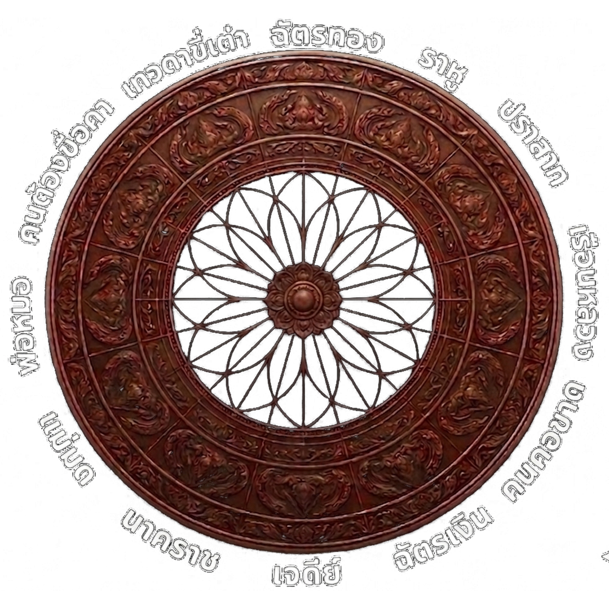

กงล้อพรหมชาติ
The Brahma Jati Destiny Wheel
ชาย
นับไปทางฉัตรเงิน
หญิง
นับย้อนไปทางนาคราช

ศาสตร์แห่งไฟพยากรณ์
ระบบไม่ได้สุ่มดวงชะตาให้คุณมั่วๆ แต่ใช้ "ดวงไฟศักดิ์สิทธิ์" วิ่งรอบจักรราศีเพื่อจำลองการนับตามตำราโหราศาสตร์โบราณ โดยอ้างอิงจาก อายุย่าง และ เพศกำเนิด ของคุณครับ
-
1. คำนวณอายุย่าง:
ปีปัจจุบัน ลบ ปีเกิด แล้วบวก 1 (เช่น ปีนี้ 2569 ลบ ปีเกิด 2530 = 39 ขวบ + 1 = อายุย่าง 40 ปี) -
2. ทำไมดวงไฟต้องวิ่ง?:
หมอดูโบราณจะใช้นิ้วชี้ "นับวน" ไปตามตาราง 12 ภพจนเท่ากับอายุ ดวงไฟของเราจำลองการนับนั้น เพื่อให้คุณเห็นผลทำนายที่แท้จริง -
3. กฎของเพศ (ทิศทางการนับ):ผู้ชาย: เริ่ม 1 ที่เจดีย์ นับเวียนไปทาง ฉัตรเงิน คอขาด...ผู้หญิง: เริ่ม 1 ที่เจดีย์ นับย้อนไปทาง นาคราช แม่มด...